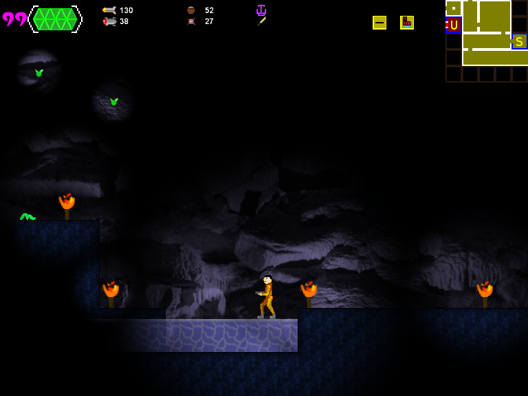

--windows def button_name id
unless defined? @button_names
button_constants = Gosu.constants(false)
.grep(/^(?:Gp|Kb|Ms)/)
.inject({}) { |h, k| h.merge! Gosu.const_get(k) => k }
@button_names = Hash.new do |names, id|
ch = button_id_to_char id
names[id] = (ch and ch.ord > 0x20) ? ch.upcase : button_constants[id]
end
end
@button_names[id]
end


@cover.draw($screen.fullscreen? ? -16 : 0, $screen.fullscreen? ? -12 : 0, 3.9, shader: @dark, multitexture: @scene)
@light_buffer = WindowBuffer.new # Or Texture of however big you need.
@circle_of_light = Image.new # Your light circle image.
@light_buffer.render do
# <=== Draw an opaque black quad to clear it. Yes, I should implement #clear color: Gosu::Color::BLACK, but not today.
@light_sources.each do |light|
@circle_of_light.draw light.x, light.y, 0, 1, 1, 0xffffff, :add # Use Gosu::Image#draw additively, so that lights make each other lighter when they blend.
end
end
# <==draw scene normally
@light_buffer.draw 0, 0, 0, mode: :multiply # Look up multiplicative blending to see why this is best for lighting.
# <== draw GUI


color: Color::WHITE with no result. Also, when you stop charging, the light is still colored. I looks fun, but not desirable :) :/#alive? method. And, when trying to yield Gosu::Image, game crashes without throwing error.Fiber.new, Fiber.yield and Fiber#resume, I think) unless you require 'fiber' to load the rest of the functionality (like #alive?). Just the same as Thread really: You have Thread, but unless you require 'thread' you miss out on most of what Threads do.require and alive? is really working, but there seem to be no way to load these images, because it's simply crashing. Just a basic example:require 'gosu'
require 'fiber'
include Gosu
class GameWindow < Window
def initialize
super(640, 480, false)
self.caption = "Test Game"
@images=[]
end
def update
@fiber=Fiber.new do
yield @images << Image.new(self, 'image1.png')
yield @images << Image.new(self, 'image2.png')
yield @images << Image.new(self, 'image3.png')
end if !@fiber
@fiber.resume if @fiber.alive?
end
def draw
end
def button_down(id)
end
end
GameWindow.new.show
@fiber ||= Fiber.new do
@images << Image.new(self, 'image1.png')
Fiber.yield
@images << Image.new(self, 'image2.png')
Fiber.yield
@images << Image.new(self, 'image3.png')
end
@fiber.resume if @fiber.alive?
Window.update. Calling resume there makes crash. But it works in drawFiber.resume don't crash, but when it 'dies', there's some 'cfp consistency error'
Powered by mwForum 2.29.7 © 1999-2015 Markus Wichitill